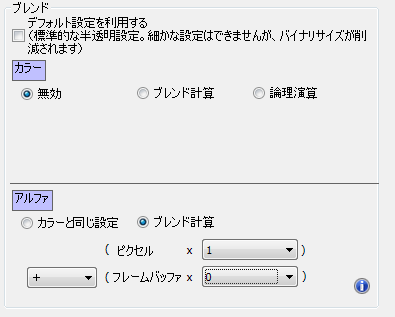
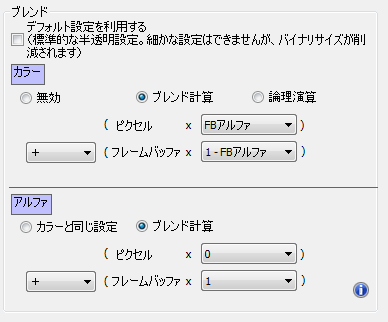

複数のペインに共通のマスクやアルファを適用したい
フラグメントオペレーションでフレームバッファのアルファを利用することで実現できます。 利用例の手順は以下の通りです。
- 背景用の画像のアルファチャンネルに、全体に適用したいマスクやアルファのグラデーション等を書き込んでおきます。
- 背景用の画像が一番奥(最初)に描画されるようにピクチャペインを作成します。
- 作成したピクチャペインの詳細なマテリアル設定にあるフラグメントオペレーションの「ブレンド」設定で、フレームバッファにアルファを書き込む設定を行います

- 次にマスク等を適用するピクチャペインを背景用のピクチャペインの上に作成します。
- 作成したピクチャペインの詳細なマテリアル設定にあるフラグ２ントオペレーションの「ブレンド」設定で、フレームバッファのアルファを参照する設定を行います

- カラーを「（ピクセルカラー×eFBアルファ）＋（フレームバッファカラー×（1-eFBアルファ））」
- アルファを「ブレンド計算」＝「（ピクセルカラー×０）＋（フレームバッファカラー×１）」
これで、4 で作成したピクチャペインは背景のピクチャペインのアルファ値によって背景とブレンドされます。